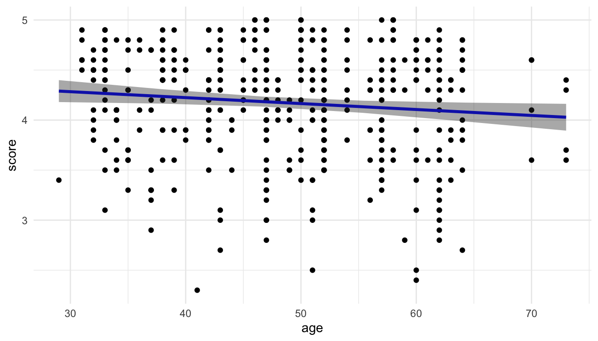

library(openintro)
evals
#> # A tibble: 463 × 23
#> course_id prof_id score rank ethnicity gender language age cls_perc_eval
#> <int> <int> <dbl> <fct> <fct> <fct> <fct> <int> <dbl>
#> 1 1 1 4.7 tenu… minority female english 36 55.8
#> 2 2 1 4.1 tenu… minority female english 36 68.8
#> 3 3 1 3.9 tenu… minority female english 36 60.8
#> 4 4 1 4.8 tenu… minority female english 36 62.6
#> 5 5 2 4.6 tenu… not mino… male english 59 85
#> 6 6 2 4.3 tenu… not mino… male english 59 87.5
#> # ℹ 457 more rows
#> # ℹ 14 more variables: cls_did_eval <int>, cls_students <int>,
#> # cls_level <fct>, cls_profs <fct>, cls_credits <fct>, bty_f1lower <int>,
#> # bty_f1upper <int>, bty_f2upper <int>, bty_m1lower <int>,
#> # bty_m1upper <int>, bty_m2upper <int>, bty_avg <dbl>, pic_outfit <fct>,
#> # pic_color <fct>10 Linear Model Visualization
The purpose of this section is to use the modelr package to visualize potentially complex linear models. We will begin with how to use the modelr package to visualize a linear regression model with a single quantitative predictor in order to see how the package works. We will then expand our usage to include models with categorical predictors, interaction terms, and quadratic (or higher order) terms.
Throughout this section, we will use a data set on course evaluations at the University of Texas Austin from the openintro package. Each row of the data set corresponds to a course at UT Austin. Variables that we will use include course evaluation score (on a 1-5 scale), age of professor, bty_avg (the attractiveness of the professor), ethnicity (either minority or not minority) and gender (either male or female in this data set).
Note
We will assume each observation is independent in our linear model. For those of you who have had STAT 313, it is more reasonable to fit a random intercepts model with prof_id as the random effect term, as each professor appears more than once in the data set (and it is likely that course scores for a professor are not independent).
10.1 Introducing modelr (Class Prep)
Our basic strategy for visualizing models is to
fit the model with
lm()construct a grid of predictor values with the
data_grid()function from themodelrpackage.Use the
gather_predictions()function from themodelrpackage to predict the response variable according to the model for each row in the grid.Use
ggplot2to construct a meaningful plot with the model predictions.
We will begin by fitting a linear regression model with score as the response and age (in years) as the predictor. Note that we can easily visualize this model without modelr because of how simple it is:
library(ggplot2)
ggplot(data = evals, aes(x = age, y = score)) +
geom_point() +
geom_smooth(method = "lm", se = FALSE)Our goal is to use modelr to recreate this plot so that we can see what the different functions are doing in a relatively simple example.
Step 1: Fit the model.
Step 2: Create a grid of predictor values.
In this simple example, we only have one predictor: age. So, we want to create a tibble that has a few values of age to plug into the fitted model. The seq_range() function can help with this. In the code below, we are creating a tibble called grid that contains 6 values of age: the minimum age in evals, the maximum age in evals, and four other values that are equally spaced between the minimum and the maximum.
Step 3: gather_predictions().
Next, we want to use the gather_predictions() function from modelr to use the mod_age model to predict course score for each row in grid. We will name this new tibble model_df.
model_df <- grid |> gather_predictions(mod_age)
model_df
#> # A tibble: 6 × 3
#> model age pred
#> <chr> <dbl> <dbl>
#> 1 mod_age 29 4.29
#> 2 mod_age 37.8 4.24
#> 3 mod_age 46.6 4.19
#> 4 mod_age 55.4 4.13
#> 5 mod_age 64.2 4.08
#> 6 mod_age 73 4.03Step 4: Use ggplot2.
The last step is to use ggplot2 to make a meaningful plot. In this case, we can construct a plot with pred on the y-axis and age on the x-axis.

We get a plot of the fitted model. To plot the original data on top of the this plot,
ggplot(data = model_df, aes(x = age, y = pred)) +
geom_line(colour = "blue", size = 1.4) +
geom_point(data = evals, aes(x = age, y = score))
Important
This exercise is only to help us understand what some of the modelr functions are doing. For such a simple example, we would not go through the trouble of using modelr to create this plot when it can easily be created without it.
Exercise 1. By “hand”, verify that the pred value in the first row of model_df can be calculated simply by plugging in 29 into the fitted regression equation obtained from mod_age.
Exercise 2. In data_grid(age = seq_range(age, n = 6)), why does it not matter what value is chosen for n in this example (as long as n is greater than or equal to 2)? Change n to be a different integer and verify that the plot does not change. Then, write a one to two sentence explanation of why the value of n does not matter here.
Exercise 3. Fit the following model, which includes an age^2 term. Then, run the rest of the code in the chunk to use modelr to obtain predictions for the age values in grid with both the mod_age model and the mod_agesq model. There are now 12 rows in model_df: 6 corresponding to predictions with the mod_age model and 6 corresponding to predictions with the mod_agesq model.
mod_agesq <- lm(score ~ age + I(age ^ 2), data = evals)
grid <- evals |>
data_grid(
age = seq_range(age, n = 6)
)
model_df <- grid |> gather_predictions(mod_age, mod_agesq)
model_df
#> # A tibble: 12 × 3
#> model age pred
#> <chr> <dbl> <dbl>
#> 1 mod_age 29 4.29
#> 2 mod_age 37.8 4.24
#> 3 mod_age 46.6 4.19
#> 4 mod_age 55.4 4.13
#> 5 mod_age 64.2 4.08
#> 6 mod_age 73 4.03
#> # ℹ 6 more rowsUse ggplot to make a plot that has (1) the fitted line from mod_age and the fitted curve from mod_agesq, where the line/curves are coloured by the model type and (2) has the data points in the background of the plot.
Exercise 4. In Exercise 3, explain why the choice of n matters more for this model. Then, change n from 6 to a value that is more reasonable and yields a nicer looking plot.
10.2 Visualizing More Complex Models
The power of modelr (and this model visualization strategy in general) can really be seen in models where the coefficients are more challenging to interpret. For example, suppose that we fit the following model to the evals data:
mod_comp <- lm(score ~ age + bty_avg + age:bty_avg + gender, data = evals)
mod_comp |> tidy()
#> # A tibble: 5 × 5
#> term estimate std.error statistic p.value
#> <chr> <dbl> <dbl> <dbl> <dbl>
#> 1 (Intercept) 5.24 0.362 14.5 2.08e-39
#> 2 age -0.0308 0.00730 -4.22 2.91e- 5
#> 3 bty_avg -0.204 0.0745 -2.74 6.48e- 3
#> 4 gendermale 0.213 0.0512 4.16 3.75e- 5
#> 5 age:bty_avg 0.00574 0.00156 3.69 2.53e- 4The model contains an interaction between age and bty_avg so the coefficients involving these two terms are very tough to interpret. Our goal is to create a plot that helps interpret this model.
We will use the same strategy outlined in the previous section to create a data frame with predictions for various values of age, bty_avg, and gender. In data_grid(), we now need to give values not only for age, but also for bty_avg, and gender. Note that gender, the categorical predictor is a vector of its possible levels.
grid <- evals |>
data_grid(
age = seq_range(age, n = 6),
bty_avg = seq_range(bty_avg, n = 6),
gender = c("female", "male")
)
grid
#> # A tibble: 72 × 3
#> age bty_avg gender
#> <dbl> <dbl> <chr>
#> 1 29 1.67 female
#> 2 29 1.67 male
#> 3 29 2.97 female
#> 4 29 2.97 male
#> 5 29 4.27 female
#> 6 29 4.27 male
#> # ℹ 66 more rowsdata_grid() creates one row for each age-bty_avg-gender combination. With 6 values for age, 6 values for bty_avg, and 2 values for gender, grid has 72 rows. We then gather the predictions from this grid with the mod_comp model:
model_df <- grid |> gather_predictions(mod_comp)
model_df
#> # A tibble: 72 × 5
#> model age bty_avg gender pred
#> <chr> <dbl> <dbl> <chr> <dbl>
#> 1 mod_comp 29 1.67 female 4.29
#> 2 mod_comp 29 1.67 male 4.50
#> 3 mod_comp 29 2.97 female 4.24
#> 4 mod_comp 29 2.97 male 4.45
#> 5 mod_comp 29 4.27 female 4.19
#> 6 mod_comp 29 4.27 male 4.40
#> # ℹ 66 more rowsAnd the final step is to create a plot of the resulting model predictions. This is the step that requires the most critical thinking, as the plot will change depending on (1) how many models we fit (just 1 in this example) and (2) how many predictor variables we have.
Exercise 1. By hand, sketch a plot that shows the predictions from the mod_comp model in a meaningful way.
Exercise 2. Make the plot that you sketched in the previous exercise.
Exercise 3. Adjust one of the values for n to modify the plot in the previous exercise.
Exercise 4. Look at the help in ?seq_range and use it to adjust the trim option for age.
10.3 Your Turn
Exercise 1. Fit a model of your choice with two categorical predictors, one quantitative predictor, and an interaction between the quantitative predictor and one of the categorical predictors. Construct a plot that helps interpret the coefficients from the fitted model.
Exercise 2. Modify the model from the previous exercise by getting rid of the interaction term. Using modelr, construct a plot that compares the model with the interaction and the model without the interaction.